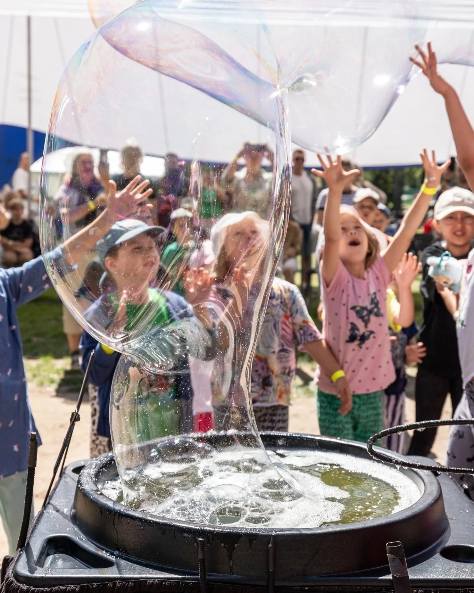

ХитШоу мыльных пузырей
Воздушные переливы, гигантские мыльные пузыри и дымные сферы, за которыми хочется наблюдать бесконечно. Ведущий превращает знакомую детскую забаву в представление с трюками, а в финале приглашает гостя оказаться внутри большого пузыря. Для дня рождения, семейного праздника или встречи целого класса. Выбирайте классический формат или неоновую версию со светящимися эффектами.
Классическое — 5 000 ₽Неоновое — 7 500 ₽
от 5 000 ₽ ориентир